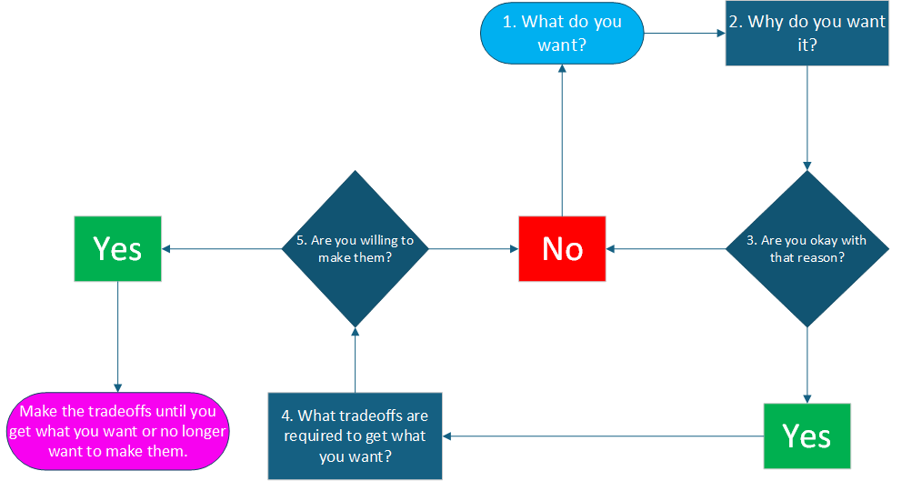

This Decision Tree of Life is a free tool for getting more of what you want. The tree guides you through five questions. Two of the questions are optional but generally recommended. All the questions are simple but answering them might be hard. Help with each question is below. Keep in mind that you and your circumstances will probably change through the years, and those changes will probably make you want different things or want things differently. Also know that wanting contradictory things at the same time is normal and will complicate matters. Adjusting wants as they change and come into conflict is a continuous process. Refer to this decision tree as needed.

1. “What do you want?” To be an astronaut? To live in ‘the biggest house on the biggest side of town’? To be happy? (Note: Happiness is a moving target made of smoke. You will very likely miss the mark if you aim for it directly. Shoot for other things and let happiness catch you by surprise.) If you do not know what you want, sitting around contemplating the question will do little to help you answer it. Go out into the world and try things – activities, jobs, relationships. Wants will sprout.
2. “Why do you want it?” This is the first recommended but optional question and not useful for every want. When a want blossoms, consider digging for its root. Why do you want that expensive car? Because it can go faster than most others? Because having it will show that you can afford something so expensive? Why is either of those desirable to you? Why? Keep asking until you cannot find more answers behind your answers. Dig deep.
3. “Are you okay with that reason?” This second recommended but optional question follows from the first and can help you avoid wrong turns. Maybe you realize that you want the car because its price will impress some people. But then you also realize that you do not want to be someone who uses expensive things to try and impress others. Go back to figuring out what you do want.
4. “What tradeoffs are required to get what you want?” Once you are comfortable with your reason for wanting what you want, identify what you must do more and less of to reach your goal. An expensive car might require spending more time at work, at least for a while. But more time at work means less time to spend on family and hobbies. More spent on family and hobbies means less for friends. So it goes with everything. Life is tradeoffs. Trade well to live well.
5. “Are you willing to make them?” You know the tradeoffs required to get what you want. Now you must decide if you are willing to make them. If you are, then make them. You still might not get what you want, but you need to make the tradeoffs to find out. There is risk. If you are not willing to make the tradeoffs, then you do not want what you think you want more than you want something else. Identify that greater want. Then consider what wanting that other thing more than the thing you thought you wanted says about you. Imagine your life as a story. What type of character wants that thing you truly want? What sorts of actions does that character take, and what should that character expect their actions to get them in the end? What you do is who you are and determines who you will be.
In our simple car example, if getting the car requires you to work more, but you never work more, always choosing instead to spend time that could be spent at work on gardening with loved ones, then gardening with loved ones is more important to you than the car. The reverse is true if you always choose working for the car over gardening with loved ones. Those are the actions of two very different characters who should expect different results in life. Both will reap what they sow.